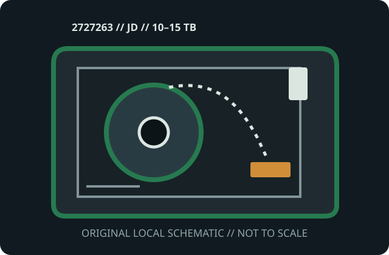

[ MODEL-SPECIFIC MEDIA // PRODUCT RECORD ]
IBM 3592 JD Advanced Type D Data Cartridge (2727263)
This entry identifies the removable medium SKU, not its drive or dock. Confirm the exact model label, medium generation, host format and drive/dock compatibility before use.

IDENTIFICATION: IBM manufacturer SKU 2727263; IBM 3592 Advanced Type D (JD) enterprise tape cartridge. Native capacity is distinguished from any data-dependent compression estimate.
Capacity, physical format and compatibility
| Manufacturer / SKU | IBM 2727263 |
|---|---|
| Medium / generation | IBM 3592 Advanced Type D (JD) enterprise tape cartridge; Type D / 3592 JD medium generation; half-inch-class magnetic tape with IBM 3592 cartridge memory. |
| Native capacity | 10 TB native in E08/TS1150 format or 15 TB in 55x-formatted systems; compression is content-dependent. |
| Drive/dock compatibility | IBM TS1150 and IBM 55x-format-supported systems whose current media matrix lists JD; confirm exact read/write mode and format before use. |
| Physical medium | Rigid, single-reel 3592 cartridge with tape leader, write-protect control and cartridge-memory chip; 12.7 mm-class tape in the 3592 housing. |
| Electrical interface | No independent data or power plug. Compatible 3592 drives make contact with cartridge memory and perform tape motion/recording; the library interface is external. |
| Format limits | Type D/JD media requires its documented 3592 drive generation; native capacity is drive-dependent. Compression and advertised maximums are not guaranteed usable capacity. |
Storage and preservation cautions
Store boxed in a cool, clean, dry, stable environment away from strong magnets, dust, direct light and moisture. Let cold media acclimatize, avoid touching the tape/leader, verify migrated data and maintain more than one independent copy.
- Do not force media into a drive/dock or use improvised cleaners, lubricants or repairs. Stop if the shell, connector, tape leader or disk enclosure is damaged.
- Preserve more than one independent copy, verify checksums after transfer, and document the drive/dock, firmware, OS and format used. Plan migration before compatible equipment is lost.
Manufacturer and archival sources
- IBM — 3592 cartridge types and part numbersIBM’s manufacturer table identifies each 3592 media type and its part number.
- IBM — Ordering 3592 tape mediaIBM documentation identifies cartridge types and the drive generations that support them.
- IBM — TS7700 media compatibilityIBM’s drive-level media reference governs compatibility and supported operations.
- IBM — Supported 3592 cartridge capacitiesIBM lists native capacity and compression ceiling by drive format and media generation.
- Library of Congress — Care, Handling, and Storage of Audiovisual MaterialsArchival magnetic tape handling and storage recommendations.
Capacity labels, compressed ratings, and compatibility are model- and host-specific. Product references and exact drive/dock manuals take precedence over shell fit or a generic family name.